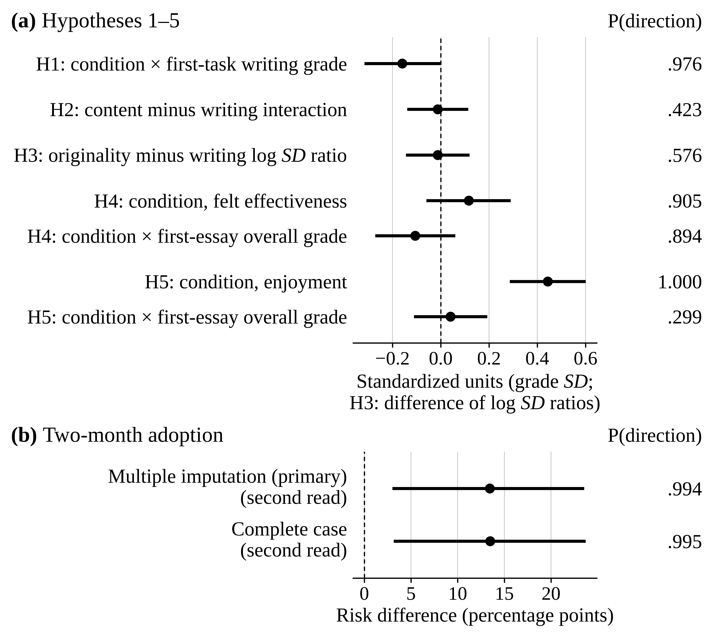
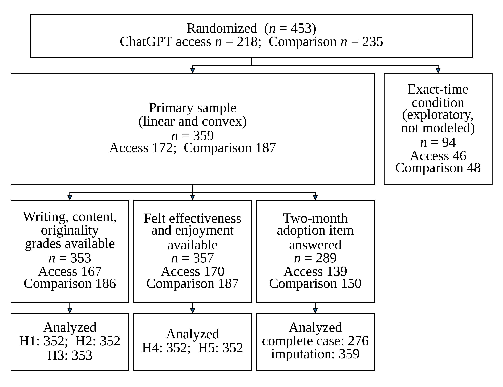

← Publication page · mjmonnot.github.io
Generative AI at work · Research companion
With ChatGPT, how well someone wrote before mattered less for how well they wrote next. People enjoyed the task more, and two months later more of them reported using a chatbot at work.
College-educated professionals completed two paid writing tasks, and a randomly chosen half were given access to ChatGPT before the second. The data come from a published randomized experiment (Noy & Zhang, 2023), which reported that the ChatGPT group spent less time and received higher grades. This study asks how access changed the pattern across people: who wrote well, how much writers differed from one another, and how people felt about the work.
Three findings
- In data from a randomized experiment with working professionals (Noy & Zhang, 2023), people given access to ChatGPT showed a weaker link between the writing quality of a first task and the writing quality of a second. The paper’s main model puts the probability that the link weakened at about 98%, but the weakening could be very small, and a simpler check could not rule out no change.
- Professionals given ChatGPT enjoyed the writing task more.
- Two months later, the share who said they had used ChatGPT or a similar chatbot at work in the past week was about 13 percentage points higher among those who had been given access. The plausible range is about 3 to 24 points.
At a glance
What this means in practice
The decision
Who should get a generative writing tool first, and how should it be introduced?
Start with the people whose writing is graded lower, and give them one supported first use. In this experiment the gain from access was largest for writers whose first essays were graded lower. One structured session with the tool was followed by higher enjoyment of the task and, two months later, by more use at work.
What was found
- With access, a person’s second-task writing grade depended less on their first-task grade. The gap between the two groups was widest for writers whose first essays were graded lower.
- People given access enjoyed the task more, by a little under half a standard deviation.
- Two months later, an estimated 42 in 100 of those given access reported using a chatbot at work in the past week, against an estimated 29 in 100 of the others.
What you can do with it
- Put early access and training where the case is strongest: with weaker writers, ahead of the strongest ones.
- Introduce the tool with a single supported first use. In this experiment one such session was followed by more reported use two months later, and the paper calls it a reasonable way to introduce the tool.
- Track writing quality by starting level, not only on average, so you can see who gains.
The study that would take it further
- Run it inside a workplace with current tools, and follow use and work quality beyond two months.
- Vary how the tool is built into the task, to see which way of using it carries the gain.
- Measure whether people still feel the work is theirs and that it matters, alongside the quality of the writing.
The first two action points are the practical points the paper itself states; tracking by starting level follows from its main result. The third card comes from the paper’s closing paragraph and its stated limits. The experiment used ChatGPT as it was in early 2023, with professionals recruited online in six occupations, and the weakening of the grade link was estimated with a wide margin. To plan a rollout or a pilot: matt@vocentive.com.
For writers and editors
In data from a 2023 randomized experiment (Noy & Zhang), access to ChatGPT weakened the link between how well 359 professionals wrote on a first task and how well they wrote on a second, went with higher enjoyment of the task, and was followed two months later by more reported chatbot use at work.
- Kind of study
- A new analysis of a randomized experiment. Access to ChatGPT was assigned at random after the first writing task, so differences in the graded writing can be attributed to being given access. Enjoyment and later use are answers from people who knew their group, and 70 people did not answer the two-month question.
- Status
- Preprint on SocArXiv, 2026. It has not been peer reviewed. The analysis was not registered in advance.
- Data
- The original experiment was run by Noy and Zhang and published in Science in 2023. They shared the data openly. The author of this paper did not collect the data and has no affiliation with them.
- Who was studied
- College-educated professionals recruited on the Prolific platform in marketing, grant writing, consulting, data analysis, human resources, and management. Age, gender, and race or ethnicity were not in the released data, and country was not recorded.
- Funding and interests
- No specific funding and no conflicts of interest declared. The paper discloses the use of AI tools in drafting text and checking statistics.
The study supports
- “ChatGPT access helped weaker writers more than stronger ones.”Interaction of −0.159, with a 97.6% probability that the link weakened. Add that the size is uncertain.
- “People given ChatGPT enjoyed the writing task more.”0.44 standard deviations, interval 0.29 to 0.60.
- “Two months later, more of them were using a chatbot at work.”About 42% against 29%; a difference of 13.4 points, interval 3.0 to 23.5.
It does not support
- “ChatGPT erases differences in writing skill.”The link weakened. It did not disappear, and the weakening could be very small.
- “ChatGPT made people feel more effective.”The estimate leans that way (0.12), but its interval includes zero.
- “This is what today’s AI tools do.”The experiment used ChatGPT in early 2023.
- “ChatGPT improves job performance.”Two paid writing tasks online, not work on the job. Later use was self-reported.
Monnot, M. J. (2026). ChatGPT access and writing skill: A Bayesian reanalysis of an online randomized experiment. SocArXiv. https://doi.org/10.31235/osf.io/y2p75_v1
Questions, or a quote: Matthew J. Monnot, matt@vocentive.com.
1 · Did the tool change who wrote well?
Everyone wrote a first piece without the tool. If skill carries over, people with a better first piece should also write a better second piece. The question is whether that carry-over is weaker when ChatGPT is available. Switch between the two groups.
2 · Did one session change what people did at work?
About two months after the experiment, participants were asked whether they had used ChatGPT or a similar chatbot in their job in the past week. Among those who had not been given access during the experiment, the estimate is about 29 in 100 saying yes.
An estimated 42 in 100 of those given access reported using a chatbot at work two months later, against an estimated 29 in 100 of the others.
The difference is 13.4 percentage points, with a plausible range from 3.0 to 23.5. Both figures are model estimates that include people who did not answer the follow-up. The second panel repeats the comparison for people with complete answers.
3 · Read one estimate at a time
Each row is a published estimate. The dot is the estimate and the line is its 95% credible interval: the range that holds the true value with 95% probability, given the model. Zero means no difference of the kind that row tests. The paper also gives, for each planned test, the probability that the effect runs in the predicted direction.
4 · How the experiment ran
- First taskEveryone completed a paid writing task without the tool
- Random assignmentOf 453 participants, 218 were given access to ChatGPT and 235 were not; 359 of them (172 and 187) are analyzed here
- Second taskGraders who were not told the group scored each piece from 1 to 7; grades are available for 353 people
- Two months later289 answered a question about chatbot use at work
5 · What the study found, in order
- Earlier writing quality mattered less with ChatGPT. The link between first-task and second-task writing grades was weaker in the access group by −0.159, 95% credible interval [−0.317, −0.002], with a .976 probability that it weakened. The gap between the groups was largest for writers whose first essays were graded lower.
- The size of that weakening is uncertain. The interval nearly reaches zero. With tighter prior assumptions it was −0.147 [−0.301, 0.004], and an ordinary regression gave −0.17 with a 95% confidence interval of [−0.35, 0.02]. The direction held in every check.
- People enjoyed the task more with ChatGPT. Enjoyment was higher by 0.44 standard deviations [0.29, 0.60]. The whole interval sits well clear of zero.
- Feeling effective leaned higher but did not settle. The estimate was 0.12 [−0.06, 0.29], with a .905 probability of being positive.
- No sign that content or originality behaved differently from writing. The data do not show a different pattern for content grades than for writing grades (−0.01 [−0.14, 0.11]), or a greater narrowing of originality grades than of writing grades (−0.01 [−0.14, 0.12]). Both intervals are wide enough that a real difference remains possible.
- More people reported using a chatbot at work two months later. 42.2% against 28.8%, a difference of 13.4 percentage points [3.0, 23.5]. Three ways of handling people who did not answer the follow-up gave differences between 10.1 and 17.2 points.
- What follows. The paper draws two practical points: the case for early access and training is strongest for weaker writers, and a single supported first use is a reasonable way to introduce the tool.
6 · The paper’s figures, with a reading guide

Select the figure to enlarge it.

Select the figure to enlarge it.
For specialists
The design, models, and the main reported estimates in one place. Estimates are posterior medians with 95% equal-tailed credible intervals; P is the posterior probability of the predicted direction. No decision cutoffs were applied.
| Design | Analysis of the public data of an online randomized experiment (Noy & Zhang, 2023, Science, 381(6654), 187–192; original registration AEARCTR-0010882). Two incentivized writing tasks; access to ChatGPT assigned after the first. Data: authors’ archival files on OSF (10.17605/OSF.IO/XD7QW). |
|---|---|
| Sample | 453 randomized (218 access, 235 comparison). Primary sample: linear and convex incentive conditions, n = 359 (172, 187); the exact-time condition (n = 94) is described but not modeled. Outcomes available: grades 353, ratings 357, adoption item 289 (139, 150). Complete-case analysis ns: 352 or 353 for Hypotheses 1–5; 276 for adoption. Age, gender, and race or ethnicity were not released, and the files contain no country item. |
| Measures | Essay grades for writing, content, originality, and overall quality on 1–7 scales from graders not told the condition; mean of 2.72 graders per essay; ICC(k) = .63 for writing and .53 for originality. Felt effectiveness and enjoyment: single items, 1–10. Adoption: used ChatGPT or a similar chatbot at work in the past week, asked at the two-month follow-up. |
| Scaling | First-task writing, content, and overall grades centered at the primary-sample mean and divided by the comparison group’s SD of the same grade; second-task writing and content grades rescaled with the matching first-task mean and SD; originality and the two ratings standardized in the primary sample. |
| Models | Bayesian regressions with occupation, task order, and payment condition as covariates. H1: second-task writing grade on condition, centered first-task writing grade, and their product. H2: writing and content modeled jointly with a residual correlation. H3: location-scale model with condition on the mean and the SD, no covariates. H4 and H5: rating on condition, first-task rating, centered first-essay overall grade, and the product. Adoption: logistic model with prior use and awareness of ChatGPT, task order, payment condition, and occupation; risk difference by averaging predictions. |
| Priors | Condition: Normal(0, 1), or Normal(0, 1.5) on the log-odds scale for adoption. Condition-by-baseline interactions: Normal(0, 0.5). Covariates: Normal(0, 1). Residual SDs: Exponential(1). Residual correlations: LKJ(2). H3 condition on log SD: Normal(0, 0.5). |
| Estimation | R 4.5.2, brms 2.23.0 on rstan 2.32.7; mice 3.19.0 for 50 imputations by chained equations within condition. Every fit for Hypotheses 1–5 met the convergence and Monte Carlo error criteria on the first attempt; no divergent transitions; largest R-hat 1.001. |
| Hypothesis 1 | Condition × first-task writing grade: −0.159 [−0.317, −0.002], P = .976. |
| Hypothesis 2 | Content interaction minus writing interaction: −0.01 [−0.14, 0.11], P = .423. |
| Hypothesis 3 | Originality minus writing, log SD ratio (access to comparison): −0.01 [−0.14, 0.12], P = .576. |
| Hypothesis 4 | Felt effectiveness: condition 0.12 [−0.06, 0.29], P = .905; condition × first-essay overall grade −0.11 [−0.27, 0.06], P = .894. |
| Hypothesis 5 | Enjoyment (secondary): condition 0.44 [0.29, 0.60], P = 1.000; condition × first-essay overall grade 0.04 [−0.11, 0.19], P = .299. |
| Planned sensitivity | Prior scales doubled, halved, and diffuse Normal(0, 10): largest change for H1 under halved scales, −0.147 [−0.301, 0.004], P = .972. Ordinary least squares: H1 −0.17, HC3 95% CI [−0.35, 0.02]; enjoyment 0.45 [0.28, 0.61]. |
| Exploratory | Censored models: H1 −0.18 [−0.34, −0.01], P = .983; H3 −0.03 [−0.24, 0.19], P = .595. Ordinal models, log odds: felt effectiveness 0.38 [0.00, 0.75], enjoyment 1.17 [0.79, 1.57]; condition-by-grade interactions −0.28 [−0.63, 0.07] and 0.14 [−0.22, 0.50]. Grader-level model −0.09 [−0.18, −0.01]; it pools ratings of both essays and is not a direct check on H1. |
| Adoption | Multiple imputation (primary, n = 359): 42.2% versus 28.8%; risk difference 13.4 [3.0, 23.5] percentage points, P(RD > 0) = .994. Complete case (n = 276): 41.8% versus 28.3%; 13.5 [3.1, 23.7], P = .995. Tipping-point range 10.1 to 17.2; Lee (2009) trimming bounds 14.3 to 15.7. Complete-case estimate under the alternative priors: 12.2 to 14.0. |
| Plan and deviations | Not registered. The protocol was fixed and time-stamped before the planned analysis, but the hypotheses had been tested once on these outcomes in an earlier analysis (22 October 2026), so the planned analysis is a retest. Adoption was added as a secondary outcome after that first analysis. The five hypotheses form the planned family with no primary outcome and no multiplicity adjustment. The adoption analyses were reestimated after a disclosed correction to the code that averages predictions; no adoption median or interval had been saved or seen before the correction. A diagnostic record held the posterior standard deviation of the estimate, and the records cannot rule out an unrecorded view of it. Sampling backend changed from CmdStan to rstan with models, priors, and seeds unchanged. Full record in the preprint’s appendix. |
| Materials | Data: original authors’ OSF deposit. Protocol, deviation record, and code: from the author on request. Reporting follows JARS-Quant and CONSORT 2025. |
What this site does and does not show
- No participant-level data are hosted here; every number on this page is a published aggregate from the preprint.
- The diagram in section 1 is an illustration of the direction of the result. The paper reports the difference between the two slopes, not each slope.
- The bars in the first panel of section 2 show model-based percentages (42.2% and 28.8%). They are estimates for all 359 participants, including those who did not answer the follow-up, not raw counts. The second panel uses the 276 people with complete answers.
- A high probability of direction indicates the sign of an effect, not that an effect of practical size exists.
- The experiment used ChatGPT as it was in early 2023, with professionals recruited online in six occupations. The results may not carry over to current tools or to work on the job.
- Enjoyment, felt effectiveness, and later use are single self-report items from people who knew which group they were in.
Tools used
R (brms, rstan, mice); Python (pandas, NumPy, DuckDB); HTML, CSS, and JavaScript.